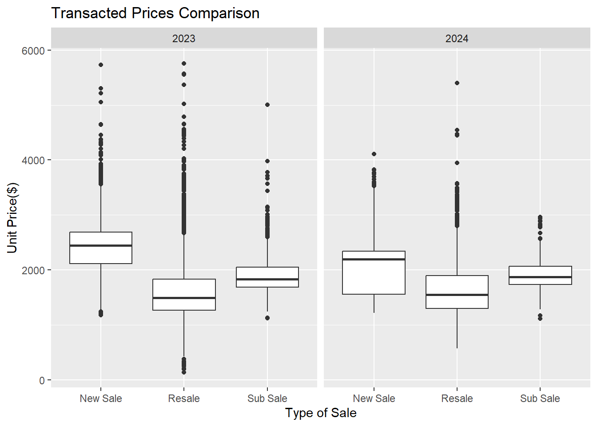
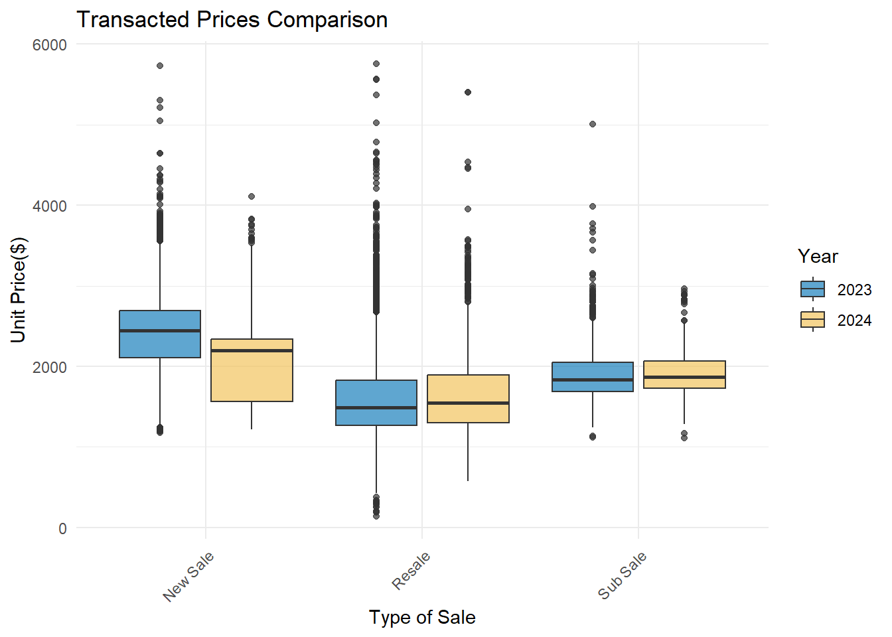
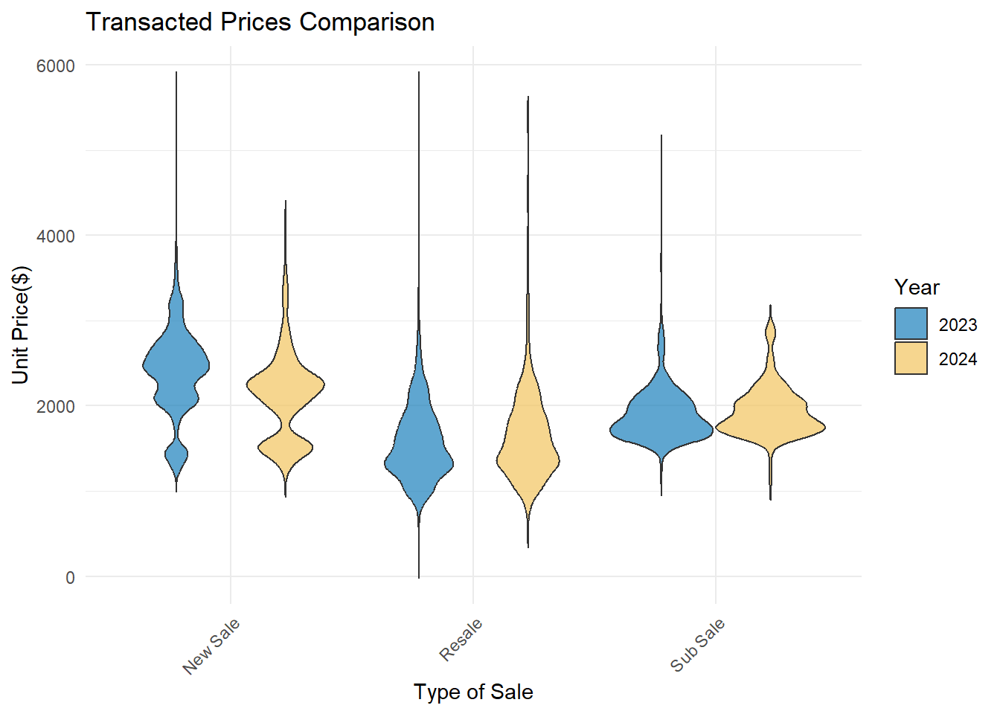
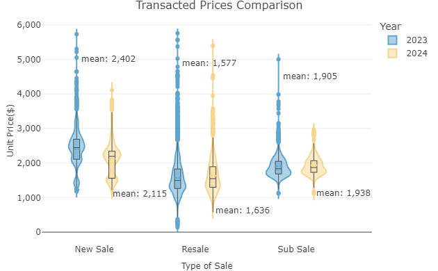

Takehome_ex02
1. Overview
This exercise aims to provide critique and improvements to distribution of transaction Priced by Sale type created by peer in Take-home Exercise 1. This will be done based on clarity and aesthetics. The original design will then be remade using data visualization design principles and best practices using ggplot2, its extensions, andt
2. Critique : Clarity and Aesthetics
2.1 Original Design
2.2 Clarity Suggestions:
- Add axis labels: The y-axis should be labeled with “Transacted Price (S$)” or the appropriate currency unit to clarify the data being represented.
- Explain data points: The dots representing individual transactions should be explained, either through a legend or a note, to ensure the audience understands their meaning.
- Provide context: Additional context, such as the total number of transactions or the average price for each sale type, could be helpful for interpreting the data.
- Clarify outliers: Some data points appear to be outliers, deviating significantly from the rest of the distribution. These should be highlighted or labeled to avoid confusion.
- Adjust y-axis scale: The y-axis scale could be adjusted to better fit the data range, as the current scale may exaggerate the differences between the lower and higher values.
2.2 Aesthetics Suggestions:
- Explore color options: The current grayscale color scheme is functional but lacks visual appeal. Introducing a carefully chosen color palette could enhance the overall aesthetics.
- Refine plot elements: The box plot elements (whiskers, boxes, and median lines) could benefit from adjustments to line thickness, transparency, or style to improve visual hierarchy and clarity.
- Optimize white space: The white space around the plot area could be better utilized by adjusting the margins or resizing the plot to make more efficient use of the available canvas.
- Improve alignment: The horizontal alignment of the x-axis labels could be improved to ensure they are centered under their respective plot areas.
- Consider alternative visualizations: While box plots are suitable for showing distributions, alternative visualizations like violin plots or ridge plots could be explored to offer a fresh perspective on the data.
- Enhance typography: The font choice, size, and weight could be refined to improve legibility and align with best practices in data visualization typography.
3. Data preparation
Launch R packages and import data from csv using readr::read_csv(). The packages installed are tidyverse, plotly and scales.
library(readr)files1<-read.csv("data/ResidentialTransaction20240308160536.csv")
files2<-read.csv("data/ResidentialTransaction20240308160736.csv")
files3<-read.csv("data/ResidentialTransaction20240308161009.csv")
files4<-read.csv("data/ResidentialTransaction20240308161109.csv")
files5<-read.csv("data/ResidentialTransaction20240414220633.csv")
uniondata <- rbind(files1, files2, files3, files4,files5)pacman::p_load(tidyverse, ggstatsplot, ggridges, plotly, dplyr,wesanderson,lubridate)Transacted.Price….,Transacted.Price….,Area..SQFT. are of type chr,As they should be numeric, they will be cast as num class.
uniondata$Transacted.Price.... <- as.numeric(gsub(",", "", uniondata$Transacted.Price....))
uniondata$Area..SQFT. <- as.numeric(gsub(",", "", uniondata$Area..SQFT.))
uniondata$Unit.Price....PSF. <- as.numeric(gsub(",", "", uniondata$Unit.Price....PSF.))Splitting the uniondata dataset into two separate data frames, one containing data from 2023 and the other containing data from 2024, based on the Sale.Date column. This can be useful for analyzing or processing data from different years separately.
library(lubridate)
uniondata$Sale.Date <- dmy(uniondata$Sale.Date)# Filter data for 2023
data_2023 <- subset(uniondata, format(uniondata$Sale.Date, "%Y") == "2023")
# Filter data for 2024
data_2024 <- subset(uniondata, format(uniondata$Sale.Date, "%Y") == "2024")4. Plotting makeover charts
4.1 Using unit price per area instead of total Transaction price
Currently, our visualization uses total transaction price to show price distributions for different sales types. However, total price can be misleading due to property size variations. For example, a large property sold for 50 million SGD and a smaller property sold for the same total price would have different unit area prices. To accurately compare price distributions, unit area price (price per square meter or price per square foot) should be used. This eliminates the influence of property size and provides a fairer comparison of price levels among different sales types.
Show the code
p1 <- ggplot(data_2023,
aes(y = `Unit.Price....PSF.`,
x= `Type.of.Sale`)) +
geom_boxplot() +
ggtitle("Transacted Prices in 2023 Q1")+
labs(x = "Unit Price($）",y = "Type of Sale")
p2 <- ggplot(data_2024,
aes(y = `Unit.Price....PSF.`,
x= `Type.of.Sale`)) +
geom_boxplot() +
ggtitle("Transacted Prices in 2024 Q1")+
labs(x = "Unit Price($）", y = "Type of Sale")
combined_data <- rbind(data_2023, data_2024)
combined_data$Year <- factor(format(combined_data$Sale.Date, "%Y"))
# Create the plot
combined_plot <- ggplot(combined_data,
aes(y = `Unit.Price....PSF.`,
x = `Type.of.Sale`)) +
geom_boxplot() +
ggtitle("Transacted Prices Comparison") +
labs(x = "Type of Sale", y = "Unit Price($)") +
facet_wrap(~Year, ncol = 2)
# Display the plot
print(combined_plot)
4.2 Merge the charts
Currently, the visualization displays the data for 2024 Q1 and 2023 Q1 separately in two independent plots, which increases the cognitive load for users to visually compare the data for two different time points. Combining them into the same coordinate system will significantly improve the efficiency of conveying information in the visualization.
Show the code
# Combine data for both years and create a new column for year
data_2023$Year <- "2023"
data_2024$Year <- "2024"
combined_data <- rbind(data_2023, data_2024)
# Plot combined data
combined_plot <- ggplot(combined_data, aes(x = `Type.of.Sale`, y = `Unit.Price....PSF.`, fill = Year)) +
geom_boxplot(position = position_dodge(width = 0.85), alpha = 0.7) +
ggtitle("Transacted Prices Comparison") +
labs(x = "Type of Sale", y = "Unit Price($)") +
scale_fill_manual(values = c("2023" = "#1a80bb", "2024" = "#f2c45f")) +
theme_minimal()
# Rotate x-axis labels for better readability
combined_plot <- combined_plot + theme(axis.text.x = element_text(angle = 45, hjust = 1))
# Display the plot
print(combined_plot)
4.3 Add more information to the visualization
Include richer statistical information such as the mean, median, etc., for each price group. Replace the box plot with a violin plot to provide more detailed information about the density of price distribution.
Show the code
# Combine data for both years and create a new column for year
# Combine data for both years and create a new column for year
data_2023$Year <- "2023"
data_2024$Year <- "2024"
combined_data <- rbind(data_2023, data_2024)
# Plot combined data
combined_plot <- ggplot(combined_data, aes(x = `Type.of.Sale`, y = `Unit.Price....PSF.`, fill = Year)) +
geom_violin(trim = FALSE, alpha = 0.7) + # Use violin plot with transparency
ggtitle("Transacted Prices Comparison") +
labs(x = "Type of Sale", y = "Unit Price($)") +
scale_fill_manual(values = c("2023" = "#1a80bb", "2024" = "#f2c45f")) +
theme_minimal()
# Rotate x-axis labels for better readability
combined_plot <- combined_plot + theme(axis.text.x = element_text(angle = 45, hjust = 1))
# Display the plot
print(combined_plot)
4.4 Improve Labeling, Axis Display, and Interactivity
Enhance the clarity of labels and axis displays in the plot by formatting numbers with thousands separators. Additionally, introduce interactivity to allow users to explore more detailed information.

stats_data <- combined_data %>%
group_by(Year, Type.of.Sale) %>%
summarise(mean = mean(Unit.Price....PSF.))
suppressWarnings({
plot_ly(combined_data, x = ~Type.of.Sale, y = ~Unit.Price....PSF., color = ~Year, colors = c("#1a80bb", "#f2c45f"),
type = "violin",
box = list(visible = T, line = list(color = "black", width = 1)),
meanline = list(visible = T),
opacity = 0.7,
hoverinfo = "text",
text = ~paste("Year: ", Year, "<br>Type of Sale: ", Type.of.Sale, "<br>Unit Price: $", format(round(Unit.Price....PSF., 0), big.mark = ","))) %>%
layout(title = list(text = "Transacted Prices Comparison", x = 0.5, y = 2, font = list(size = 16)),
xaxis = list(title = list(text = "Type of Sale", font = list(size = 12)), tickfont = list(size = 12)),
yaxis = list(title = list(text = "Unit Price($)", font = list(size = 12)), tickfont = list(size = 12), tickformat = ","),
legend = list(title = list(text = "Year")),
violinmode = "group",
annotations = list(
list(
x = "New Sale", y = stats_data$mean[stats_data$Type.of.Sale == "New Sale" & stats_data$Year == "2023"],
text = paste("mean:", format(round(stats_data$mean[stats_data$Type.of.Sale == "New Sale" & stats_data$Year == "2023"], 0), big.mark = ",")),
showarrow = F, xref = "x", yref = "y", yshift = 130, xshift = 20
),
list(
x = "Resale", y = stats_data$mean[stats_data$Type.of.Sale == "Resale" & stats_data$Year == "2023"],
text = paste("mean:", format(round(stats_data$mean[stats_data$Type.of.Sale == "Resale" & stats_data$Year == "2023"], 0), big.mark = ",")),
showarrow = F, xref = "x", yref = "y", yshift = 165, xshift = 20
),
list(
x = "Sub Sale", y = stats_data$mean[stats_data$Type.of.Sale == "Sub Sale" & stats_data$Year == "2023"],
text = paste("mean:", format(round(stats_data$mean[stats_data$Type.of.Sale == "Sub Sale" & stats_data$Year == "2023"], 0), big.mark = ",")),
showarrow = F, xref = "x", yref = "y", yshift = 130, xshift = 20
),
list(
x = "New Sale", y = stats_data$mean[stats_data$Type.of.Sale == "New Sale" & stats_data$Year == "2024"],
text = paste("mean:", format(round(stats_data$mean[stats_data$Type.of.Sale == "New Sale" & stats_data$Year == "2024"], 0), big.mark = ",")),
showarrow = F, xref = "x", yref = "y", yshift = -50, xshift = 65
),
list(
x = "Resale", y = stats_data$mean[stats_data$Type.of.Sale == "Resale" & stats_data$Year == "2024"],
text = paste("mean:", format(round(stats_data$mean[stats_data$Type.of.Sale == "Resale" & stats_data$Year == "2024"], 0), big.mark = ",")),
showarrow = F, xref = "x", yref = "y", yshift = -50, xshift = 68
),
list(
x = "Sub Sale", y = stats_data$mean[stats_data$Type.of.Sale == "Sub Sale" & stats_data$Year == "2024"],
text = paste("mean:", format(round(stats_data$mean[stats_data$Type.of.Sale == "Sub Sale" & stats_data$Year == "2024"], 0), big.mark = ",")),
showarrow = F, xref = "x", yref = "y", yshift = -40, xshift = 68
)
))
})